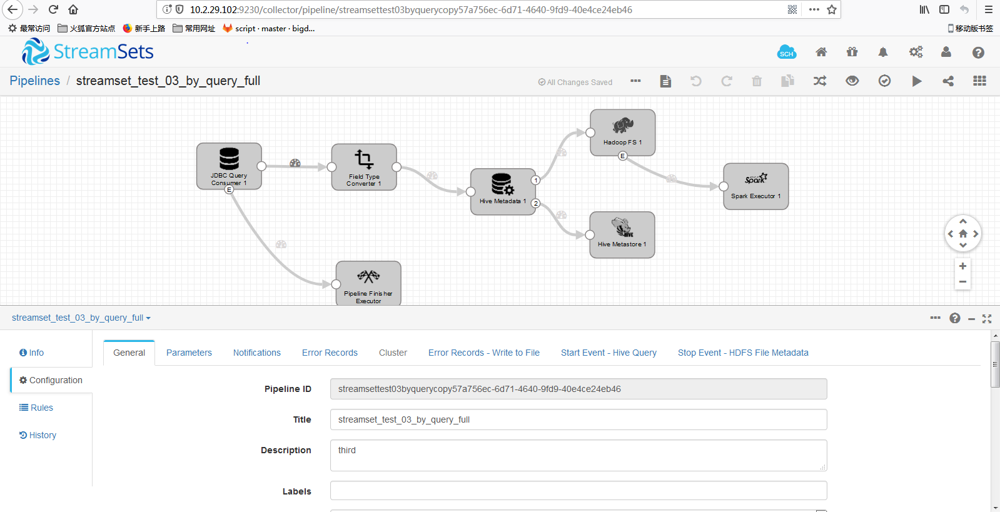
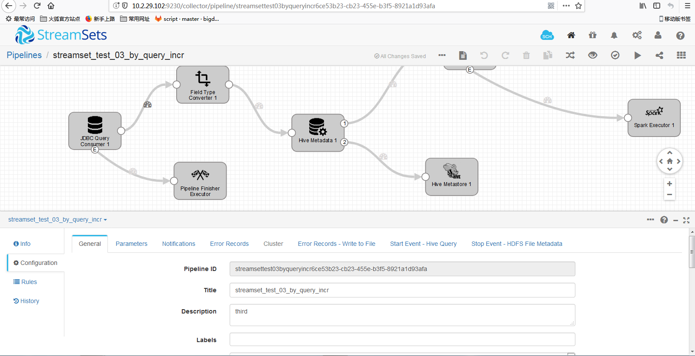
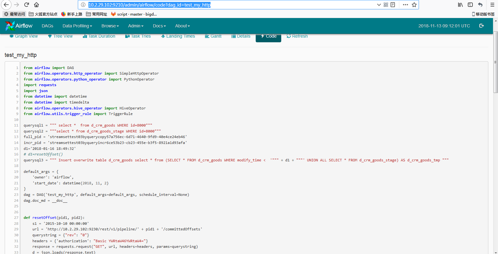

Streamsets介绍
Streamsets是一款大数据实时采集和ETL工具，可以实现不写一行代码完成数据的采集和流转。通过拖拽式的可视化界面，实现数据管道(Pipelines)的设计和定时任务调度。最大的特点有：
(1) 可视化界面操作，不写代码完成数据的采集和流转;
(2) 内置监控，可是实时查看数据流传输的基本信息和数据的质量;
(3) 强大的整合力，对现有常用组件全力支持，包括50种数据源、44种数据操作、46种目的地。
对于Streamsets来说，最重要的概念就是数据源(Origins)、操作(Processors)、目的地(Destinations)，创建一个Pipelines管道配置也基本是这三个方面，除此之外还有执行器(executor)，是做一些数据处理操作的。
常见的Origins有Kafka、HTTP、UDP、JDBC、HDFS等；Processors可以实现对每个字段的过滤、更改、编码、聚合等操作；Destinations跟Origins差不多，可以写入Kafka、Flume、JDBC、HDFS、Redis等。
POC 需求
实现一个工作流程：
1.对一个数据库中的所需要的表进行增量的抽取，从数据库到分布式文件系统上，比如从postgresql到hive上；
2.有业务需求的抽取，因为数据库表中的修改时间字段不会跟随修改的数据而更新，所以需要在每次增量的抽取上次抽取时间点之前时间的数据（比如前3个月）；
3.要能自动判断hive上是否存在该表，根据情况进行创建，之后进行数据载入；
POC结果
最后的实现方案是：
通过airflow调度streamsets的restapi实现pipeline的开启以及一些数据的获取和pipline的状态判断，筛选条件offset的设置，实现整个sdc的etl 流程，不过最后发现该实现方案存在较大的缺陷，而且还有一个时间变量的设置存在问题；
streamsets的案例是: 全量抽取pipeline
http://10.2.29.102:9230/collector/pipeline/streamsettest03byquerycopy57a756ec-6d71-4640-9fd9-40e4ce24eb46；
以及增量pipeline
http://10.2.29.102:9230/collector/pipeline/streamsettest03byqueryincr6ce53b23-cb23-455e-b3f5-8921a1d93afa；
全量

增量

airflow调度脚本案例是：http://10.2.29.102:9210/admin/airflow/code?dag_id=test_my_http；
airflow调度

总结
优点
1.使用拖拽的方式减少了手动etl各种繁琐的代码编写，并且实时即开即用，可以实现UI界面的etl的简单操作，运行时候的可视化界面可以了解数据载入的各个过程情况，并且有rest的api可以实现其他进程的调用，比如调度程序airflow的调度，实现定时任务自动化etl，减少每次人工操作的繁琐，实现自动化智能化，适合大数据下的使用；
缺点
1.因为设计的时候是定制普通的etl，某些根据业务要求的etl无法实现，比如本次poc中的案例，还有pipeline 之间的依赖，包括restapi在airflow调度后的异步问题导致的etl流程顺序紊乱 ，比如本例中的conditional_task1根据实际情况进行判断，假如全量抽取之前不存在的话，会调用SimpleHttpOperator进行一次全量的抽取，但是通过restapi返回的response并不是pipeline执行完成后才返回的，执行表明已经调用成功，但是运行的状态未知，这样可能在load_crm_goods_full还没跑完的情况下（数据量大的情况下），conditional_task2开始执行，去拿load_crm_goods_full对应的pipeline的id的offset去对增量表的offset进行设置，有可能导致拿不到的结果，而导致整个etl流程失败；除此之外，run_hive_query对2表的数据进行合并的时候要拿到一个判断值去进行表的数据merge,是根据上一个job,load_crm_goods_incr的offset来取值的，但是load_crm_goods_incr要根据reset_crm_goods1，reset_crm_goods2的其中一个结果来决定，所以在定义sql的时候需要动态定义时间的值，这在整个airflow脚本中是很难实现的，暂时没有想到解决的方案。